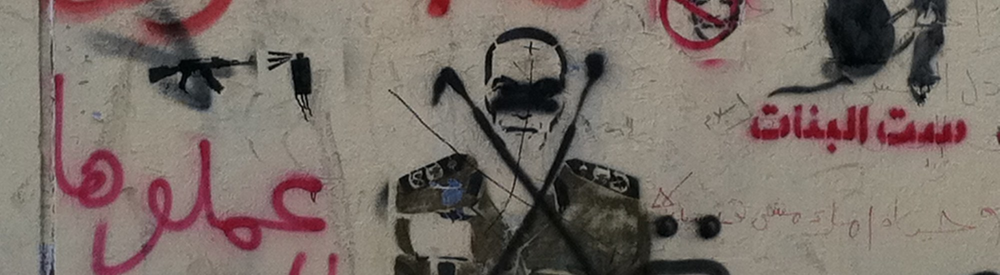
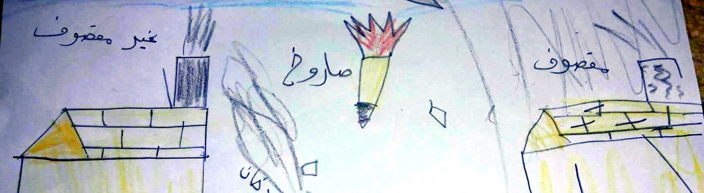

I use empirical methods—surveys and experiments in conflict-affected settings, archival and historical records, and original cross-national datasets—to study three sets of questions about how states form, change, and wage war.
Published articles are available for download from the Duke Law Scholarship Repository.

A stencil of a military officer crossed out, on a wall near Tahrir Square, Cairo, January 2012 (Revkin 2012)
This line of research asks how regimes change, how governing institutions build or lose legitimacy in the eyes of the governed, and how societies hold power to account for past abuses. It covers transitional justice — the processes through which states pursue accountability, truth, and reparation after atrocity or authoritarian rule — and how law is used to manage, and sometimes manipulate, public memory of the past. A related strand examines how the institutions that distinguish democracies, including judicial independence, free and fair elections, and the separation between military and police, respond to pressures including polarization, war and other national emergencies, and autocratization.
Methods Original cross-national datasets · survey experiments and focus groups · archival and historical records
Publications
- Revkin, Mara R. Forthcoming 2027. “Authoritarian Transitional Justice.” In The Oxford Handbook of Law and Authoritarianism, ed. Cora Chan, Madhav Khosla, Benjamin Liebman, and Mark Tushnet. SSRN
- Revkin, Mara R., Ala Alrababah, and Rachel Myrick. 2024. “Evidence-Based Transitional Justice: Incorporating Public Opinion into the Field, with New Data from Iraq and Ukraine.” Yale Law Journal 133: 1582–1675. PDF
- Stewart, Megan A., Jonathan B. Petkun, and Mara R. Revkin. 2024. “The Progressive Case for American Power: Retrenchment Would Do More Harm Than Good.” Foreign Affairs 103: 90–102. PDF
- Revkin, Mara R. 2022. “How Does Subnational Variation in Repression Affect Attitudes Toward Police? Evidence from Iraq’s 2019 Protests.” Violence: An International Journal 3: 85–99. PDF
- Revkin, Mara R. 2022. “Reflections on Authoritarianism.” Arab Law Quarterly 36: 525–530. PDF
- Revkin, Mara R. 2018. “The Limits of Punishment: Transitional Justice and Violent Extremism — Iraq Case Study.” United Nations University and the Institute for Integrated Transitions. PDF
- Brown, Nathan J., and Mara R. Revkin. 2018. “Islamic Law and Constitutions.” In The Oxford Handbook of Islamic Law, ed. Anver M. Emon and Rumee Ahmed, 778–818. Oxford University Press. PDF
- Eisenzweig, Tal D., Peter Posada, and Mara R. Revkin. 2016. “A ‘Most Serious Crime’: Pakistan’s Unlawful Use of the Death Penalty.” Justice Project Pakistan and the Allard K. Lowenstein International Human Rights Clinic, Yale Law School. PDF
- Revkin, Mara R. 2013. “The Egyptian State Unravels: Meet the Gangs and Vigilantes Who Thrive Under Morsi.” Foreign Affairs, June 27. PDF
- Revkin, Mara R. 2013. “Egypt’s Constitution in Question.” Middle East Law and Governance 5: 331–343.
Working Papers
- Revkin, Mara R., and Olivia Wang. 2026. “Between Memory and Oblivion: The Empirical and Legal Limits of the ‘Duty to Remember.’” Working Paper.
- Revkin, Mara R. 2026. “‘Operations Other Than War’: The Rise of Domestic Military Deployments, 1992–2026.” Working Paper.
Works in Progress
- Revkin, Mara R., and Orly Maya Stern. 2026. “International Humanitarian Law’s Blind Spots: Regulating Military Force Outside Armed Conflict.” Working Paper.

Police car in Bartella, Iraq (Revkin 2018)
A long tradition in social science holds that war makes states, but that literature has focused on armies, taxation, and bureaucracies. My work examines the legal institutions—courts, codes, and police—through which wartime authorities govern, in two settings rarely studied together: a twenty-first-century insurgency in the Middle East and the nineteenth-century American capital. A second strand traces what happens after the fighting stops: how divided communities decide whether to punish or reintegrate those accused of collaboration, and how humanitarian assistance shapes reconstruction in fragile settings.
Methods Archival research · conjoint and survey experiments · household surveys in conflict-affected settings
Publications
- Revkin, Mara R., Benjamin Krick, and Raed Aldulaimi. 2025. “Reintegrating Iraqis Returning Home After Conflict: Lessons from Variation Between Four Communities.” United Nations Institute for Disarmament Research, MEAC Findings Report 41, 1–38. PDF
- Revkin, Mara R., and Kristen Kao. 2024. “No Peace Without Punishment? Reintegrating Islamic State Collaborators in Iraq.” American Journal of Comparative Law 71: 989–1032. PDF
- Kao, Kristen, and Mara R. Revkin. 2023. “Retribution or Reconciliation? Post-Conflict Attitudes Toward Enemy Collaborators.” American Journal of Political Science 67: 358–373. PDF
- Revkin, Mara R. 2022. “When Do ‘Closed Camps’ Become Prisons by Another Name?” Yale Journal of International Law Online 47: 57–70. PDF
- Revkin, Mara R., Hayal Akarsu, Monica Bell, Joanna Gilmore, Nicole Nguyen, Akwasi Owusu-Bempah, Omar Sirri, and Alex Vitale. 2022. “Roundtable: Police Reform in Global Perspective.” The Century Foundation.
- Revkin, Mara R. 2021. “Competitive Governance and Displacement Decisions Under Rebel Rule: Evidence from the Islamic State in Iraq.” Journal of Conflict Resolution 65: 46–80. PDF
- Revkin, Mara R. 2020. “What Explains Taxation by Resource-Rich Rebels? Evidence from the Islamic State in Syria.” Journal of Politics 82: 757–764. PDF
- Revkin, Mara R., and Ariel I. Ahram. 2020. “Perspectives on the Rebel Social Contract: Exit, Voice, and Loyalty in the Islamic State in Iraq and Syria.” World Development 132: 1–9. PDF
- Revkin, Mara R. 2020. “Police Decentralization, Fragmentation, and Implications for Patterns of Violence: Insights from Iraq.” APSA Comparative Politics Newsletter 30: 61–66. PDF
- Revkin, Mara R. 2018. “When Terrorists Govern: Protecting Civilians in Conflicts with State-Building Armed Groups.” Harvard National Security Journal 9: 100–144. PDF
- Revkin, Mara R., and Ahmad Mhidi. 2016. “Quitting ISIS: Why Syrians Are Abandoning the Group.” Foreign Affairs, May 1. PDF
- Revkin, Mara R. 2016. “The Legal Foundations of the Islamic State.” Brookings Project on U.S. Relations with the Islamic World, Analysis Paper 21. PDF
- Revkin, Mara R. 2014. “Triadic Legal Pluralism in North Sinai: A Case Study of State, Shari‘a, and ‘Urf Courts in Conflict and Cooperation.” UCLA Journal of Islamic and Near Eastern Law 13: 21–59. PDF
- Mallat, Chibli, and Mara R. Revkin. 2013. “Middle Eastern Law.” Annual Review of Law and Social Science 9: 405–433. PDF
Working Papers
- Revkin, Mara R., and Gage Gramlick. 2026. “The Civil War Origins of Fiscal Policing: Evidence from the District of Columbia.” Working Paper. SSRN
- Dill, Janina, Marnie Howlett, Carl Müller-Crepon, and Mara R. Revkin. 2026. “Resistance, Collaboration, and Ethnic Bias: Evidence on Social Cohesion in Wartime Ukraine.” Working Paper.

A child’s drawing labelling one house “bombed” (مقصوف) and the other “not bombed” (غير مقصوف), displacement camp near Mosul, Iraq, February 2017 (Revkin 2017)
This work concerns the conduct of war: how civilians judge the armed forces fighting around them, how international humanitarian law regulates—and fails to regulate—the use of military force, and what is owed to those harmed, whether symbolic, in the form of apologies and memorialization, or material, in the form of compensation and investment in reconstruction.
Methods Original datasets built from military strike reports · satellite imagery · conjoint experiments, interviews, and focus groups · field research in conflict-affected settings
Publications
- Krick, Benjamin, Jonathan Petkun, and Mara R. Revkin. 2025. “Civilian Harm and Military Legitimacy in War: Evidence from the Battle of Mosul.” International Organization 79: 332–357. PDF
- Hathaway, Oona A., Azmat Khan, and Mara R. Revkin. 2025. “The Dangerous Rise of ‘Dual-Use’ Objects in War: History, Evidence, and the Case for Reform.” Yale Law Journal 134: 2645–2750. PDF
- Levy, Gabriella, and Mara R. Revkin. 2025. “Introducing the Fragility Index: A Tool for Evidence-Based Transitional and Recovery Programming.” International Organization for Migration in South Sudan and Duke University, 1–77. PDF
- Revkin, Mara R. 2024. “The Israel-Hamas Conflict: International Law, Accountability, and Challenges in Modern Warfare.” Judicature International: 1–4. PDF
- Revkin, Mara R. 2023. “The Self-Fulfilling Prophecy of ‘Perpetual’ War in Iraq.” In Iraq 20 Years On: Insider Reflections on the War and Its Aftermath, ed. Renad Mansour and Thanassis Cambanis, 16–21. Chatham House. PDF
- Revkin, Mara R., and Elisabeth Jean Wood. 2023. “Religion, Ideology, Institutions, and Patterns of Violence.” In “Forum: How Religious Are ‘Religious’ Conflicts?” International Studies Review 25: 19–22. PDF
- Revkin, Mara R., and Elisabeth J. Wood. 2021. “The Islamic State’s Pattern of Sexual Violence: Ideology and Institutions, Policies and Practices.” Journal of Global Security Studies 6: 1–20. PDF
- Klugman, Jeni, Robert U. Nagel, Mara R. Revkin, and Orly Maya Stern. 2021. “Can the Women, Peace and Security Agenda and International Humanitarian Law Join Forces?” Georgetown Institute for Women, Peace and Security. PDF
- Kohstall, Florian, Sarah E. Parkinson, and Mara R. Revkin. 2020. “After the Field.” In Safer Field Research in the Social Sciences: A Guide to Human and Digital Security in Hostile Environments, ed. Jannis Grimm, Kevin Koehler, Ellen M. Lust, Ilyas Saliba, and Isabell Schierenbeck, 69–88. SAGE. PDF
- Revkin, Mara R. 2018. “‘I Am Nothing Without a Weapon’: Understanding Child Recruitment and Use by Armed Groups in Syria and Iraq.” In Cradled by Conflict: Child Involvement with Armed Groups in Contemporary Conflict, ed. Siobhan O’Neil and Kato Van Broeckhoven, 104–139. United Nations University. PDF
Working Papers
- Dill, Janina, and Mara R. Revkin. 2026. “The Moral Logic of Blame for Civilian Casualties: Evidence from Iraq.” Working Paper. SSRN
For a complete list of papers and publications, please see my C.V. or visit my Google Scholar page.